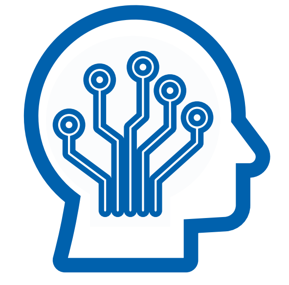
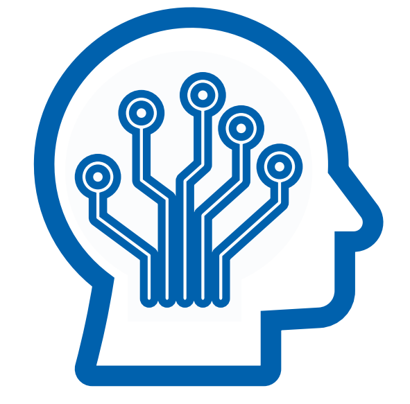

Übersicht

- Name:
- Adresse:
- Wohnort:
- Geburtsdatum:
- Merkmale:
- Grösse: 182cm
- Geschlecht: Männlich
- Besondere Merkmale: Brillenträger
- Alen Cehic
- Untere Steinegg 4
- Herisau
- 02.12.1997
- 182cm
- Männlich
- Brillenträger


Im Sommer 2022 begann ich meine Lehre als Informatiker EFZ mit Fachrichtung Applikationsentwickler bei der BühlerGroup AG.
Jedoch kann ich mit sicherheit angeben, dass ich einen eher unüblichen Bildungsweg für schweizer Standards hatte. Nach der zweiten Sekundarschule ging ich zunächts an die Kantonsschule Trogen. Leider musste ich kurz vor Abschluss aus gesundheitlichen Gründen die Ausbildung unterbrechen.
Zusammen mit meiner Genesung habe ich bis dahin definitiv entschieden Informatiker zu werden. Das Interesse kristalisierte sich aus meiner Leidenschaft für Computerspiele heraus. Mich interessierte was alles dahinter steckt und so habe ich meine ersten Erfahrungen mit Programmieren gemacht. Daraufhin besuchte ich als Quereinsteiger zwei Semester die HF Informatik an der ZbW in Abtwil. Nach diesen zwei Semestern entschied ich mich eine mehr Praxisorientierte Ausbildung in Form von einer Berufslehre zuerst abzuschliessen.

 

Eines meiner grössten Träume ist mit meiner Leidenschaft für Computerspiele gekoppelt. Ich bin ein Leidenschaftlicher Fan von RPG oder noch mehr von MMORPG Spielen. Es gab für mich keine Vorstellung die mich mehr begeisterte, als so eine Fantasywelt hautnah zu erleben, und zwar nicht nur durch den PC-Bildschirm. Aus diesen Gründen wäre eine optimierte VR-Fantasywelt in die man selbst möglichst realitätsnah eintauchen kann, ein grösster Traum.
Ein anderes Ziel ist natürlich nicht nur in Informatik, vorallem Software Development, sehr kompetent zu werden. Sondern auch um dieses Wissen einzusetzen um in meinen Augen die Welt besser zu gestalten. Dies beinhaltet nicht nur rein Softwaretechnische Lösungen für externe Geräte, sondern auch für mögliche Implantate im Körper. Ich lese immer wieder über Artikel wie, das an der ETH eine Beinprothese entwickelt wurde die Rückmeldungen an das organische Nervensystem schickt, oder auch eine Brille mit Kamera die bis zu einem gewissen Grade bei Blinden die Sehkraft wieder herstellen kann. Benannt ist diese Technologie als "Neuroprothesen".